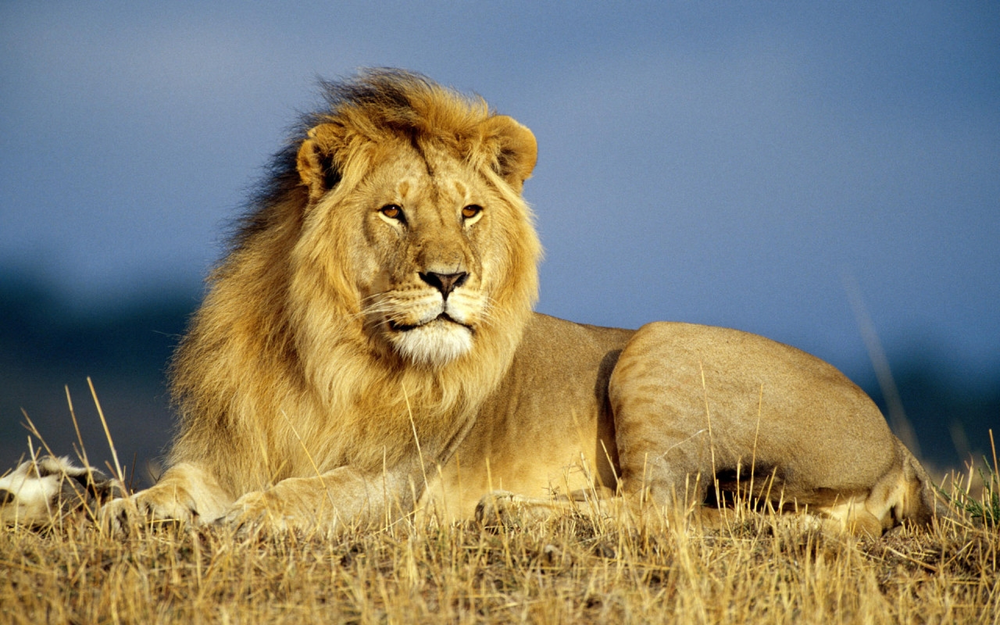

León

Nombre común: León
Nombre científico: Panthera leo
Hábitat y estilo de vida:
El león es originario de África, donde habita principalmente en sabanas, pastizales y bosques abiertos. También existe una pequeña población de leones asiáticos en la India, en el Parque Nacional de Gir. Prefiere áreas donde puede cazar grandes presas como antílopes, cebras y búfalos. Los leones son animales sociales que viven en manadas, las cuales están formadas por varias hembras, sus crías y uno o más machos. Las hembras suelen ser las principales cazadoras, mientras que los machos protegen el territorio y a la manada.
5 características del león:
- Macho con melena: Los leones machos son fácilmente reconocibles por su melena, que simboliza poder y madurez. Además, la melena proporciona protección durante las peleas con otros machos.
- Vida social en manadas: A diferencia de otros felinos, los leones viven en grupos llamados manadas, compuestas por hembras, crías y algunos machos. Las hembras suelen cazar en grupo, lo que les da ventaja al capturar grandes presas.
- Cazadores nocturnos: Los leones son animales crepusculares y nocturnos, lo que significa que cazan al anochecer o durante la noche. Esto les permite aprovechar la oscuridad para sorprender a sus presas.
- Rugido potente: El rugido de un león puede escucharse hasta 8 kilómetros de distancia. Este rugido sirve para marcar territorio, advertir a otros leones sobre la presencia de intrusos y coordinar con otros miembros de la manada.
- Tamaño y fuerza: Los leones son grandes y musculosos. Los machos pueden llegar a medir hasta 3 metros de largo (incluida la cola) y pesar entre 150 y 250 kg. Son muy fuertes, lo que les permite dominar su entorno y cazar presas de gran tamaño.
regresar al menu